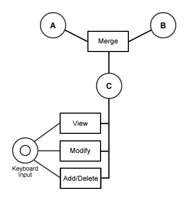
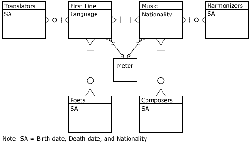
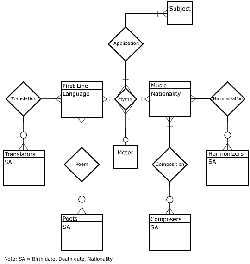
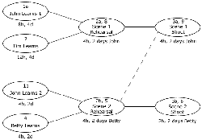
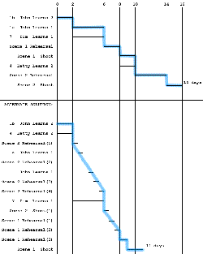

Home >> Mid-term exam >> Mid-term exam (solutions)
- Match the best:
_9.
_5.
13.
_2.
_3.
_4.
20.
16.
18.
11.
- Black Box
- UML
- Repeatable
- Track Ball
- Peer to Peer
- Objective
- Biometric Input Device
- Entity Relationship Diagram
- Fault Tolerant
- Version Control
- Resistance as a function (Peerage)
- Inverted Mouse
- Architecture predisposed for the deletion and addition of clients
- Being Cardinal or Ordinal
- Software Engineering tool for Object Oriented Design
- Class/Object Design Template
- Rubber Glove and Light Pen
- To be modified for different environments without applying means beyond the specification
- Input (known), Process (undetermined), Output (expected)
- Software Engineering tool for articulating the Processing among External Entities
- Critical Component of Configuration Management
- Re-establish performance and/or data in case of software failure
- Second level of the Capability Maturity Model
- Computer Language Slang
- Risk/Impact
- Software Engineering tool for Modeling Current Information, Requirements and the design of Data Bases
- Dialogue Diagrams for Negative Feedback
- Maintain performance in case of software failures or interface infringement
- Control of daughter objects through anemographs
- Camera, Microphone, Scanner
-
Define any five (5) in Software Engineering terms (provide examples when applicable).
- Risk Management
-
The planning and control of potential events or conditions which may jeopardize the success of a software development. Risk is calculated as the product of impact on the project and the probability of occurance. If the risk is high enough then a mitigation plan is created.
- Defined
-
Third level of CMM where the organization has a standard process for all of the activities of the Software Life Cycle. The standard processes should be named and documented (probably at flow chart level). A defined organization will have training programs, a focus on process, peer reviews, participation with other Software Engineering groups, and an integrated software management process for total software product engineering.
- Pseudo Code
-
A complete language slang used by designers to communicate to developers. It attempts to maximize information communication while sacrificing syntax and grammar formalities. Common vernacular can be mixed into the pseudo code.
- Completeness
-
The degree that full implementation of Requirements (thus implying capabilities) is achieved. This is a Quality criteria.
- Co-existence
-
The ability of software to function properly with other independent software in a common environment while sharing resources.
- Prototype
-
A working model of software with an emphasis on particular aspects. Quality characteristics are investigated with prototypes. An evolving prototype is one that is modified until the desired knowledge is gained. A throwaway prototype is discarded once a point of knowledge is gained.
- Glass Box Testing
-
Software testing methodology using knowledge of the internal processes coded within the software. Glass Box testing can be inspected or demonstrated and different criteria such as code, branch, or path coverage may apply.
-
Software is created to merge information from two data files and/or a data entry keyboard.
Assumptions:
-
The system has 4 processes.

- The average and maximum file size and record size are available.
- {Requirements} is a subset of {Requirements of Merge} U {Requirements of Modify} U {Requirements of Add/Delete}.
- Create a test plan.
Test Plan
-
Test 1 (Merge)
This will test the merge process.
Kind of test: Demonstration
Resources: Test system, input files, target data storage
General Context: Input files.Size of records (across) \ # of records (down) 1 Average Maximum 2 Max. 0 - (1) - - Avg. (2) (3) (4) - Max. - (5) (6) - 2 Max. - - - (7) Shedule: the Monday after the Merge module is ready.
-
Test 2 (View)
This will test the Viewing process.
Kind of test: Demonstration
Resources: Test system ,merged file (like output of Test 1)
General Context: 1st, middle, last, and one at random will be viewed.
Schedule: Tuesday after i)Test 1 AND View module is ready. -
Test 3 (Modify)
This test will test the Modify process which is at the Record level.
Kind of test: Demonstration
Resources: Test system, merged files (like output of Test 1)
General Context: Ouput files with 1, average, maximum, and 2 maximum record size will be modified and then unmodified.
Schedule: Wednesday after i)Test 1 AND Modify module is ready. -
Test 4 (Add/Delete)
This test will test the Add/Delete process which is at the file level.
Kind of test: Demonstration
Resources: Test system, merged files (like output of Test 1)
General Context: Output files with input files of (2) (3) (6) (7) will have a record added at the beginning, middle, and end; then the record will be deleted.
Schedule: Thursday after i)Test 1 AND Add/Delete module is ready.
Traceability:
Test 1 (Merge) { Requirements of Merge }
Test 2 (View) { Requirements of View }
Test 3 (Modify) { Requirements of Modify }
Test 4 (Add/Delete) { Requirements of Add/Delete }
-
Test 1 (Merge)
- Design at least one test (more if needed in part c.)
Test 1 (Merge)
This test will test the Merge process.
Method: Black BoxInput files:
- A1 A2 A3 A4 A5 A6 A7 B1 - - X - - - - B2 X - - - - - - B3 - - X X X - - B4 - - - - - - - B5 - - - - - - - B6 - - - - - X - B7 - - - - - - X Data Analysis:
Record Count(C) = Record Count(A) + Record Count(B)
File Size(C) = File Size(A) + File Size(B)
- Prepare an argument for QA defending your plan and tests.
- Traceability shows completeness
- Conservation of Records @ extremes, mean
- Conservation of File Size @ extremes, mean
- Demonstration of Record integrity (Test 2)
- Demonstration of View function
- Demonstration of Modify function
- Demonstration of Add/Delete function
-
-
a) Draw an Entity Relationship Diagram for the attached material. Note: There are some zero conditions.
- Naive solution:

Click to enlarge - Full solution:

Click to enlarge
b) Draft a database in table notation from the above diagram.
eg) Mother ( Mother Id, Mother Name, Birthday )
Child ( Child Id, Child Name, Birthday )(SA = Birth date, Death date, Nationality)
Composer ( Composer ID, Composer Name, SA )
Composition ( Music ID, Composer ID, date )
Music ( Music ID, Music Name, Nationality )
Harmonization ( Music ID, Harmonizer ID, date )
Harmonizer ( Harmonizer ID, Harmonizer Name, SA )
Hymn ( FL ID, Music ID )
Meter ( Meter ID, Meter Name, FL ID, Music ID )
Application ( Subject ID, FL ID, Music ID )
Subject ( Subject ID, Subject Name )
FirstLine ( FL ID, First Line, Language )
Poem ( FL ID, Poet ID, date )
Poet ( Poet ID, Poet Name, SA )
Translation ( FL ID, Translator ID, date, fromlanguage, tolanguage )
Translator ( Translator ID, Translator Name, SA )
- Naive solution:
-
Create a Gantt Chart, find and calculate the critical path, identify 3 risks and quantify them.
A movie is being made.
Resource Availability Learn Rehearse Shoot (1 hr) Actor (John) 2 hr/day 4 hours 2 hours 1 hour Actor (Betty) 5 hr/day 4 hours 4 hours 2 hours Actor (Tim) 3 hr/day 6 hours 2 hours 2 hours Camera 2 hr/day Note: The camera is only available 3 out of 5 days. Trumpet 1 hr/day - Betty must rehearse with trumpet. - Scene Duration Characters Scene 1 2 hours John, Tim Scene 2 1 hour John, Betty, Trumpet The actors must learn their part => when the actors can rehearse their part => then the shoot may happen.
Task List
PreReq CoReq Resources Straight Time Linked Time Constraint 1. John Learns a) 1 8 2/day b) 2 4 2/day 2. John Rehearses a) 1 1a, 7 8 4 4 2/day b) 2 1b, 4 5 2 4 2/day 3. John Shoots a) 1 2a, 8 9 Camera 2 4 2/day b) 2 2b, 5 6 Camera 1 2 2/day 4. Betty Learns 4 2/day 5. Betty Rehearses 4, 1b 2b Trumpet 4 4 1/day 6. Betty Shoots 5, 2b 3b Trumpet, Camera 2 2 1/day 7. Tim Learns 12 3/day 8. Tim Rehearses 7, 1a 2a 4 4 3/day 9. Tim Shoots 8, 2a 3a Camera 4 4 3/day Task Network Chart

Click to enlargeGantt Chart

Click to enlargeRisks
Camera booking
- 2 day delay (.0001) (M)
Actor illness
- John stops production (.01) (L)
- Tim shift to other scene (.02) (S)
- Betty shift to other scene (.06) (S)Trumpet loss
- Replacement cost, 1 day delay (.001) (M)